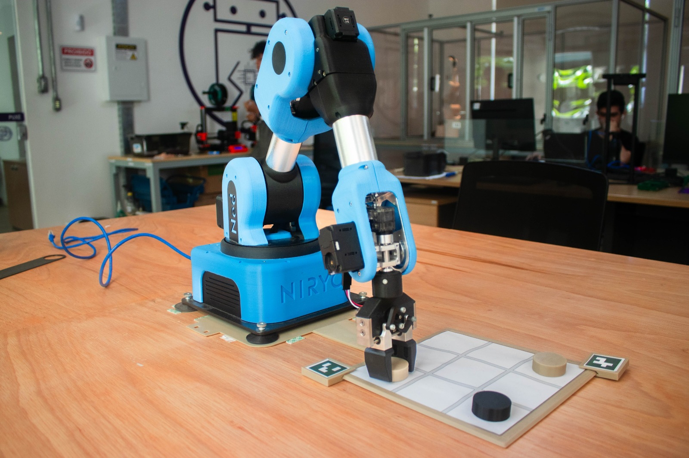

Integrado ao renomado ecossistema de inovação do CIn-UFPE, o CRIAR oferece uma pós-graduação de excelência em Robótica e Inteligência Artificial. Com foco em uma formação profunda e aplicada, o curso capacita profissionais em frentes estratégicas como Visão Computacional, Performance e tecnologias afins, conectando o rigor acadêmico à solução de desafios reais da indústria.

O projeto segue a filosofia de uma residência tecnológica (inspirada nas residências médicas). Os alunos têm dedicação exclusiva e, em meio turno, dedicam-se a assistir às aulas. No outro turno, realizam no laboratório atividades práticas de Inovação e Pesquisa e Automação e Execução de Testes de Software. A residência proporciona ao aluno tanto capacitação teórica em sala de aula (pela manhã) quanto experiência de trabalho em atividades práticas de automação e execução de teste de software (pela tarde). Desafios de inovação e pesquisa na área de robótica e inteligência artificial aplicadas a teste de software são solucionados tanto pela equipe fixa do projeto (líder técnico e engenheiros) quanto pelos alunos em suas monografias.
Ao longo do curso os residentes devem se organizar em times e colaborar para o desenvolvimento dos desafios e para a gerência do seu time.
O curso possui uma grade de disciplinas com foco prático em testes, Inteligência Artificial e desenvolvimento de software, além de visão computacional.
Domine a otimização de algoritmos de processamento de imagens com Halide! Aprenda teoria e prática, implemente pipelines eficientes e crie efeitos visuais incríveis.
Domine algoritmos de machine learning e otimização de modelos em diferentes arquiteturas. Aprenda frameworks líderes e estratégias avançadas.